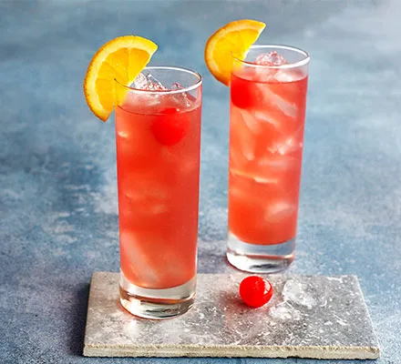

Sex on the beach

Learn how to make this classic summer cocktail.
Combine vodka with peach schnapps and cranberry juice to make a classic sex on the beach cocktail.
Garnish with cocktail cherries and orange slices.
Ingredients
For the cocktail:
- Ice
- 50ml vodka
- 25ml peach schnapps
- 2 oranges,juiced,plus 2 slices to garnish
- 50ml cranberry juice
- glacé cherries, to garnish (optional)
How to make:
- Fill two tall glasses with ice cubes. Pour the vodka, peach schnapps and fruit juices into a large jug and stir.
- Divide the mixture between the two glasses and stir gently to combine.
- Garnish with the cocktail cherries and orange slices.